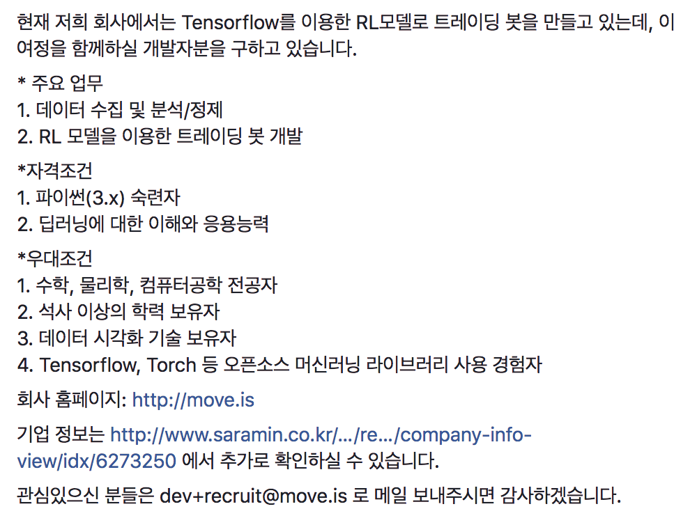

한국에서 일어나는 파이썬 관련 소식을 전합니다.
블로그
페이스북의 한국 파이썬 사용자 그룹에서 작은 이벤트가 열린 덕에 이번 주 블로그가 아주 풍성하네요. :)
Flask에서 JSON 데이터 예외 처리 by ash84님
플라스크에서 JSON 데이터를 처리하려다가 파싱에 실패하는 경우들을 우회할 수 있는 두 가지 방법을 ash84님이 설명합니다.
Python에서 smtplib을 활용한 이메일 발송 by Youngjae님
파이썬 환경에서 smtplib을 활용하여 이메일을 발송하는 법, 본문에 한글을 사용하는 법, html 본문 사용하기와 파일 첨부하기, Gmail의 pop/smtp 서버 사용법을 Youngjae님이 정리하였습니다.
파이썬에서 LINE 메시지 보내기 by 최지훈 님
LINE API를 사용하여 메시지를 보내는 방법을 최지훈 님이 소개합니다.
Python, pyqt4 스톱워치 만들기 by Youngjae님
파이썬 GUI 도구인 PyQt4와 Qt Designer를 활용하여 스톱워치를 만드는 간단한 예제와 소스코드를 Youngjae님이 공개하였습니다.
구인
LINE 도쿄 DevOps 엔지니어
LINE 도쿄 지사에서 DevOps 엔지니어를 모집합니다. 근무지는 도쿄 시부야/신주쿠이며 일본어를 몰라도 된다고 하네요. (배울 수 있게 해준다고...)
무브 주식회사 웹 개발자
무브 주식회사에서 텐서플로를 이용한 트레이딩 봇을 함께 만들 파이썬 숙련자이자 딥러닝을 구현할 수 있는 개발자를 구합니다.
(아래는 페이스북 미사용자를 위한 캡처 화면)
